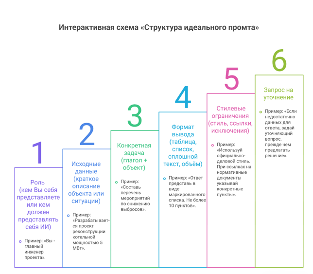

Искусство промптинга: как ставить задачи нейросети, чтобы получать результат
На прошлом уроке вы научились выбирать ИИ-инструмент под конкретную задачу. Но даже самый мощный ИИ бесполезен, если вы не умеете с ним говорить. Как стажер, нейросеть требует четкой постановки задачи. Чем конкретнее запрос, тем точнее ответ.

Почему важно правильно формулировать запросы
Если вы скажете новому сотруднику: «Подбери оборудование для системы вентиляции», результат будет непредсказуем. Если же уточните: «Подбери приточную установку для офиса площадью 200 м² с производительностью не менее 1000 м³/ч, с электрическим нагревателем, класс защиты IP54, предпочтительно российского производства», вероятность получения нужного ответа возрастает в несколько раз.
Нейросеть работает по тому же принципу. Она не сможет понять то, что не указано явно, а будет опираться на статистические закономерности в своих обучающих данных. Чем больше конкретики вы закладываете в запрос, тем точнее будет ответ.
Ключевое правило: качество ответа прямо пропорционально качеству вопроса.
Основные элементы эффективного запроса
Интернет переполнен советами «научитесь писать промпты правильно», однако механическое копирование шаблонов не дает стабильного результата - разные модели и задачи требуют индивидуального подхода. Вместо заучивания мы освоим универсальную методологию, которую можно применять к любой нейросети.
Успешный промпт содержит пять ключевых компонентов. Рассмотрим их последовательно.
| Компонент | Описание | Пример |
| Контекст | Кто вы, в какой роли выступаете, какая ситуация предшествует запросу | «Ты - главный инженер проекта с 15-летним стажем. Занимаешься подготовкой раздела ОВ для административного здания». |
| Задача | Чёткое описание действия, которое требуется выполнить | «Составь спецификацию основного оборудования для системы вентиляции». |
| Ограничения | Формат ответа, длина, стиль, источники, которых следует придерживаться | «Ответ представь в виде таблицы. Не более 10 позиций. Используй официально-деловой стиль. Ссылки на нормативные документы оформи в квадратных скобках». |
| Примеры | Образец желаемого ответа или аналогия | «Пример: "Вентилятор канальный, производительность 1500 м³/ч, давление 250 Па, тип - центробежный"». |
| Уточнения | Возможность задать уточняющие вопросы или указать на необходимость доработки | «Если потребуется дополнительная информация, сначала задай уточняющий вопрос». |
Эти компоненты можно комбинировать в зависимости от сложности задачи.
Структура идеального промпта
На основе практического опыта сформулируем универсальную структуру, подходящую для большинства инженерных задач:

Даже зная структуру, можно допустить ошибки, которые снизят качество ответа. Рассмотрим наиболее частые из них.
Ошибка | Пример | Как исправить |
Слишком общий запрос | «Расскажи про вентиляцию» | Конкретизируйте: какую именно информацию нужно получить - виды систем, расчёт, подбор оборудования |
Отсутствие контекста | «Напиши письмо» | Укажите, кому адресовано письмо, по какому поводу, стиль написания |
Нет ограничений по формату | «Сделай спецификацию» | Укажите, в каком виде представить: таблица, список, колонки |
Противоречивые требования | «Будь кратким, но подробно опиши все нюансы» | Чётко определите приоритет - краткость или полнота |
Запрос нескольких действий без разбивки | «Напиши текст и нарисуй схему» | Разделите на отдельные промпты или укажите последовательность действий |
Неучёт возможностей модели | «Нарисуй чертёж в AutoCAD» (для текстовой модели) | Используйте специализированные инструменты для графики |